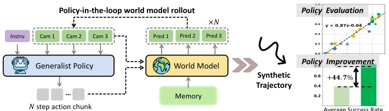
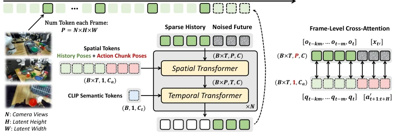
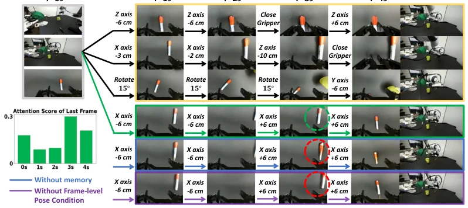
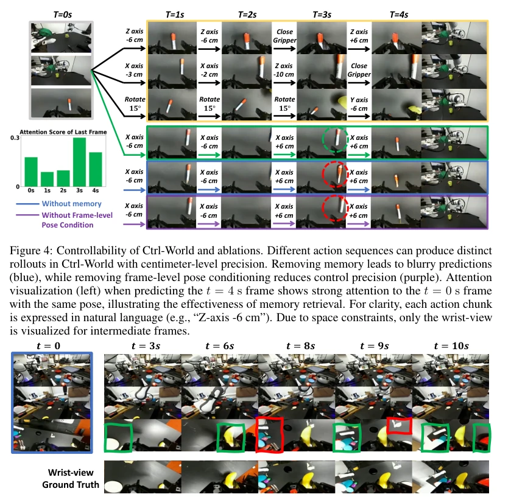
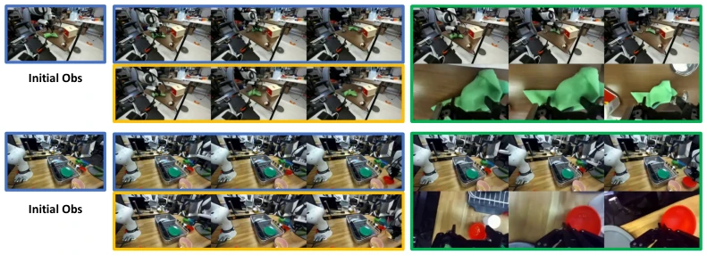
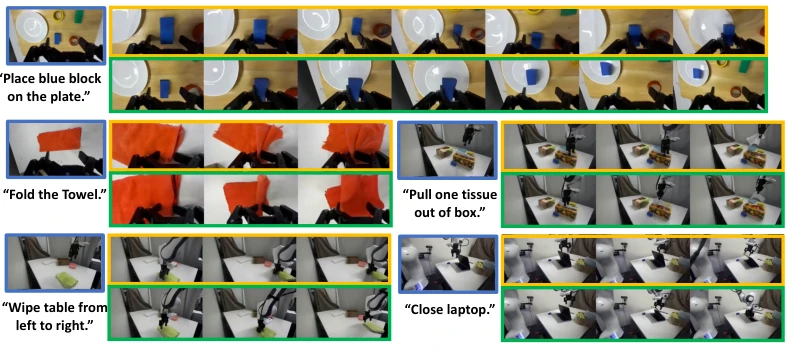
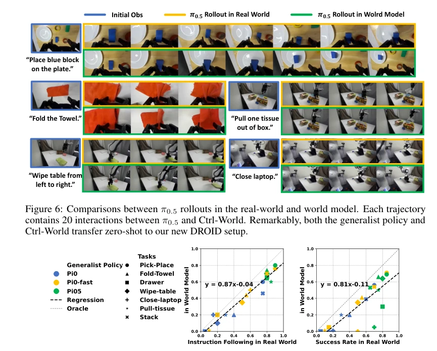
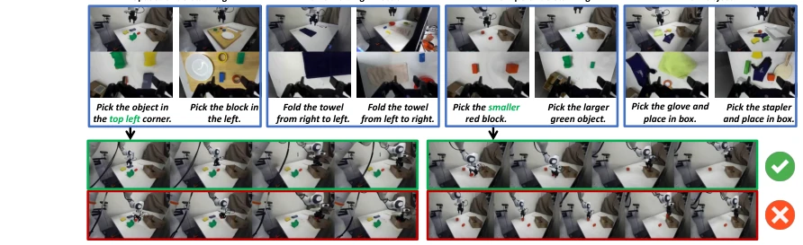
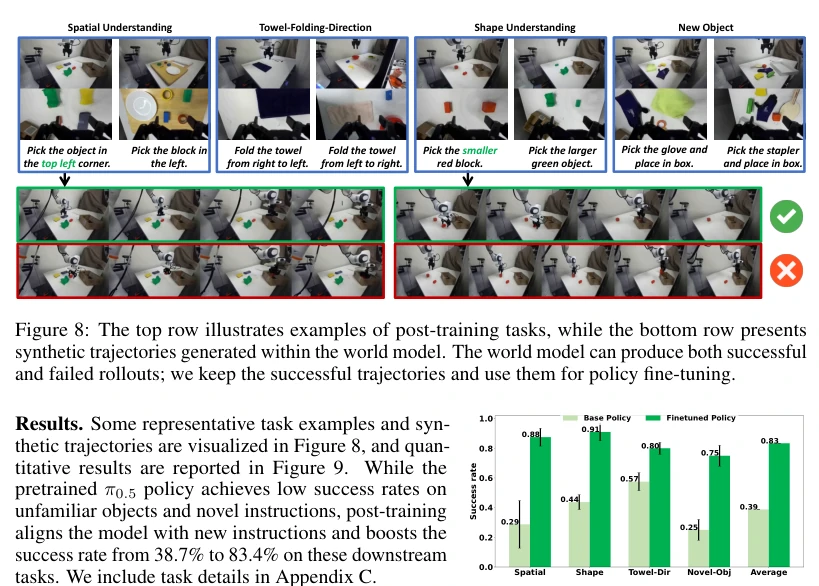

This paper attempts to replace real-world testing with "imagination", which sounds very promising, after all, real-world rollout is expensive and slow. Ctrl-World indeed developed a multi-view world model, the addition of wrist camera views indeed reduces hallucinations during grasping, this point is worth praising. However, don't overhype it, the physics engine is still not accurate enough, details like collision and sliding are still easily exposed in simulation, for example, the action of closing a laptop is not precise enough. Although the success rate increased by 44.7%, this is mainly for new instructions and new objects, old tasks may have limited improvement. Overall, it is a decent Sim-to-Real tool, can assist in evaluating policies, but still falls short of "completely replacing real-world testing", after all, the physical world is not that obedient, success in simulation does not guarantee success in real-world. Additionally, the model is sensitive to initial observations, and long-horizon reasoning still has limitations. However, as an ICLR paper, proposing a controllable multi-view world model and verifying policy improvement is already a sincere contribution.
研究动机Motivation
通用机器人策略评估太贵了，真机 rollout 慢且难扩展 (Atreya et al., 2025)。现有世界模型多是被动视频预测，不支持主动交互 (Li et al., 2025b; Zhu et al., 2024)。单视角导致部分可观测和幻觉，且缺乏细粒度动作控制。需要能支持多步交互、多视角预测且长时程一致的世界模型，才能闭环评估和改进策略。特别是现代 VLA 策略需要多视角输入，现有模型无法兼容。此外，长时程生成容易漂移，需要记忆机制。当前策略在开放世界表现脆弱，缺乏快速反馈机制。现有方法难以在想象空间中与策略交互，导致迭代效率低下。因此，构建兼容现代策略、支持细粒度控制且长时程一致的世界模型至关重要。
General robot policy evaluation is too expensive, real-world rollout is slow and hard to scale (Atreya et al., 2025). Existing world models are mostly passive video prediction, not supporting active interaction (Li et al., 2025b; Zhu et al., 2024). Single view leads to partial observability and hallucinations, and lacks fine-grained action control. A world model that supports multi-step interaction, multi-view prediction, and long-horizon consistency is needed to close-loop evaluate and improve policies. Especially modern VLA policies need multi-view input, existing models cannot be compatible. Additionally, long-horizon generation is prone to drift, needing a memory mechanism. Current policies are fragile in open worlds, lacking fast feedback mechanisms. Existing methods find it hard to interact with policies in imagination space, leading to low iteration efficiency. Therefore, building a world model compatible with modern policies, supporting fine-grained control, and long-horizon consistency is crucial.

Figure 1: Ctrl-World is designed for policy-in-the-loop rollouts with generalist robot policies. It generates joint multi-view predictions (including wrist views), enforces fine-grained action control via frame-level conditioning, and sustains coherent long-horizon dynamics through pose-conditioned memory retrieval. These components enable (1) accurate policy evaluation in imagination, with alignment to real-world rollouts, and (2) targeted policy improvement through synthetic trajectories.
Overall based on SVD diffusion model fine-tuning. Pipeline is: Input historical frames + action blocks -> Predict future multi-view videos. Innovations: 1. Multi-view joint prediction, concatenated tokens generated together, reduce inconsistency between views. 2. Pose condition memory retrieval, sparse historical frames + robot arm pose embedding, anchor past states via cross-attention, solve long-horizon drift. 3. Frame-level action condition, convert actions to pose embedding, let visual tokens focus on corresponding actions, improve control accuracy. Training uses diffusion loss, keep pre-trained knowledge. Specifically, model initialized from 1.5B SVD backbone, only initialize action projection MLP. During training, input includes historical tokens and noised future frames, target is to minimize L2 loss between prediction and real frames. Memory mechanism samples k frames history, interval m, project pose into spatial transformer of each frame. Action condition converts action sequence to Cartesian space pose, concatenate with historical pose, align visual tokens via frame-wise cross-attention. This enables the model not only to predict videos but also respond precisely to action instructions, achieving controllable imagination space rollout.

Figure 2: Ctrl-World is initialized from a pretrained video diffusion model and adapted into a controllable, temporally consistent world model with: (1) Multi-view input and joint prediction for unified information understanding. (2) Memory retrieval mechanism, which adds sparse history frames in context and project pose information into each frame via frame-level cross-attention, re-anchoring predictions to similar past states. (3) Frame-level action conditioning to better align high-frequency action with visual dynamics.

Figure 4: Controllability of Ctrl-World and ablations. Different action sequences can produce distinct rollouts in Ctrl-World with centimeter-level precision. Removing memory leads to blurry predictions (blue), while removing frame-level pose conditioning reduces control precision (purple). Attention visualization (left) when predicting the t = 4 s frame shows strong attention to the t = 0 s frame with the same pose, illustrating the effectiveness of memory retrieval. For clarity, each action chunk is expressed in natural language (e.g., “Z-axis -6 cm”). Due to space constraints, only the wrist-view is visualized for intermediate frames.

Figure 5: Consistency of Ctrl-World. Since the wrist camera’s field of view changes dramatically within a single trajectory, leveraging multi-view information and memory retrieval is essential for generating consistent wrist-view predictions. Prediction highlighted in the green box are inferred from other camera views, while those in the red box are retrieved from memory.
Use DROID dataset (95k trajectories). Baselines are WPE and IRASim. Metrics look at PSNR, FVD, etc. Ctrl-World is better than baseline on long trajectory generation, wrist view reduces hallucinations. In policy evaluation, simulation ranking is highly correlated with real-world (y=0.87x). In policy improvement, fine-tune with synthetic success trajectories, π0.5 success rate from 38.7% to 83.4%. Ablation experiments prove memory, action condition, multi-view are all key. But physics details still have errors. In specific experiments, we generated 10s trajectories on validation set, Ctrl-World's FVD significantly lower than baseline. In policy evaluation, we tested π0, π0-fast, π0.5 etc. models, found sim success rate and real success rate show strong correlation. In policy improvement, by rephrasing instructions and resetting initial state to increase diversity, filter success trajectories for fine-tuning, significantly improved generalization ability on unseen objects and instructions.

Figure 3: Qualitative results on long-horizon rollouts from the validation set. Prior models rely on single-view prediction, suffering from partial observability and hallucinations (e.g., failing to move the green towel or grasp the red bowl). In contrast, Ctrl-World jointly predicts from third-view and wrist-view cameras, yielding precise future trajectories aligned with the ground truth.

Figure 6: Comparisons between π0.5 rollouts in the real-world and world model. Each trajectory contains 20 interactions between π0.5 and Ctrl-World. Remarkably, both the generalist policy and Ctrl-World transfer zero-shot to our new DROID setup.

Figure 7: Quantitative correlations between real-world and world-model rollouts. The world model reliably captures instruction-following behavior but tends to underestimate the execution success rate.

Figure 8: The top row illustrates examples of post-training tasks, while the bottom row presents synthetic trajectories generated within the world model. The world model can produce both successful and failed rollouts; we keep the successful trajectories and use them for policy fine-tuning.

Figure 9: Policy improvement. Post- training on synthetic data improves policy instruction-following by 44.7% on average.